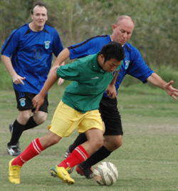
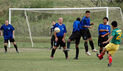
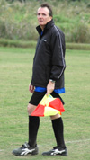

Misato, Sunday 14th October,
You wouldn't normally expect a team with an average age on the boneyard side of forty to come roaring out of the starting blocks like Linford Christie with a lighted firework up his jacksy, but that's exactly what happened at Misato on Sunday, as Albion Old Boys laid claim to the fastest-ever TML goal, Hitoshi Ono finishing off an eight pass move to score after 20 seconds without a Guarana player having touched the ball (and we have the video to prove it !!).
For a while this spectacular curtain-raiser proved a hard act to follow, and it was well into the half before the Albion got round to doubling their lead, Mick O'Hagan tucking away the penalty after a harried Guarana defender had handled the ball. 2-0 at half-time.
Though there was no goal straight from the kickoff in the second half, it wasn't long in coming, as Giles Legg latched on to a neat through ball from Naoki Ogasawara, took full advantage of the keeper's indecision, and slotted home number 3. The Guarana players now seemed to sense that the game was beyond them, and for the Albion it was fill-yer-boots time. Kuni Hosoi smacked home a left-wing cross-shot from somewhere on the far bank of the river, Giles got a second goal that was almost a carbon copy of his first, Mick doubled his tally by getting his nose to Rod Cramblit's wickedly-inswinging corner, then returned the favour by crossing for Rod to fire home from the back stick after great build-up play involving half a dozen players, Naoki joined in the fun with a goal that completely escapes my memory, and Hitoshi also joined the two-goal club thanks to yet another killer assist from Mick.
And what were the back five doing as the midfield and forwards indulged in this shameful orgy of goal-gluttony? Well, Tommy The Cat Haussler produced one fine leaping save from the only shot that threatened his clean sheet, full backs Rob and Niall could both claim at least one or two assists, sweeper Mark as usual was intercepting attacks several minutes before the opposition had decided to launch them, and Tel at centre back resorted to his usual tactic of shouting so loudly that the opposition forwards retreated to their own penalty area for some peace and quiet. So, a final score of 9-0 to the voracious veterans. I don't know what age-defying supplement these Old Boys are on at the moment, but it's a lot more potent than Guarana juice.
